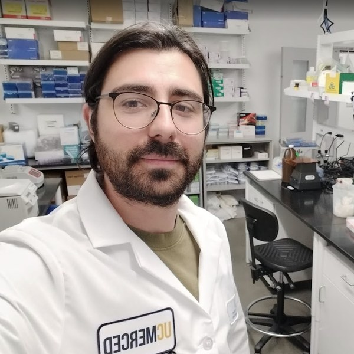
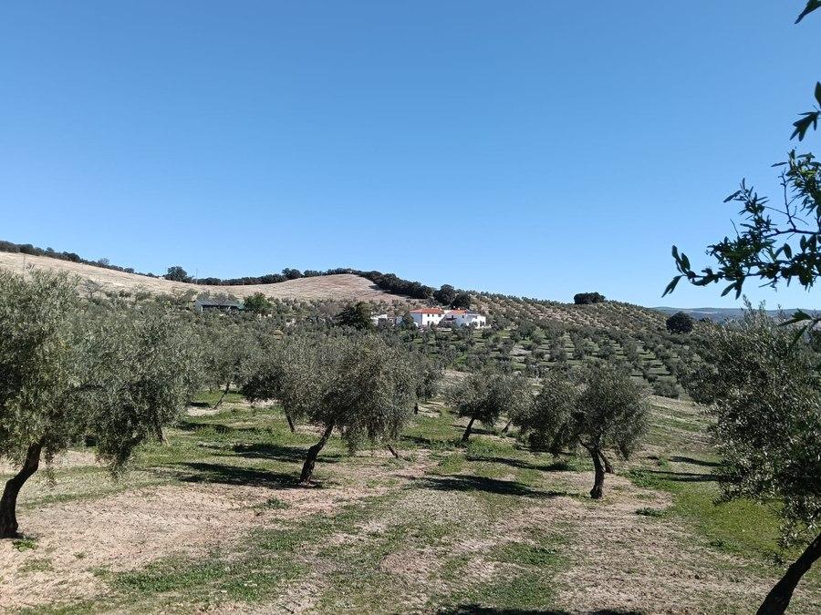
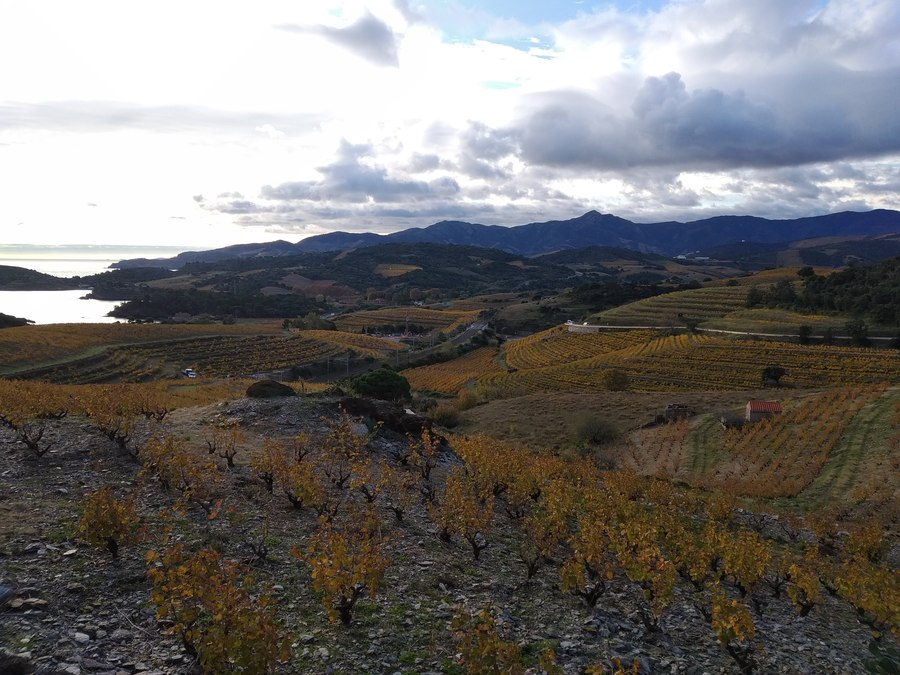
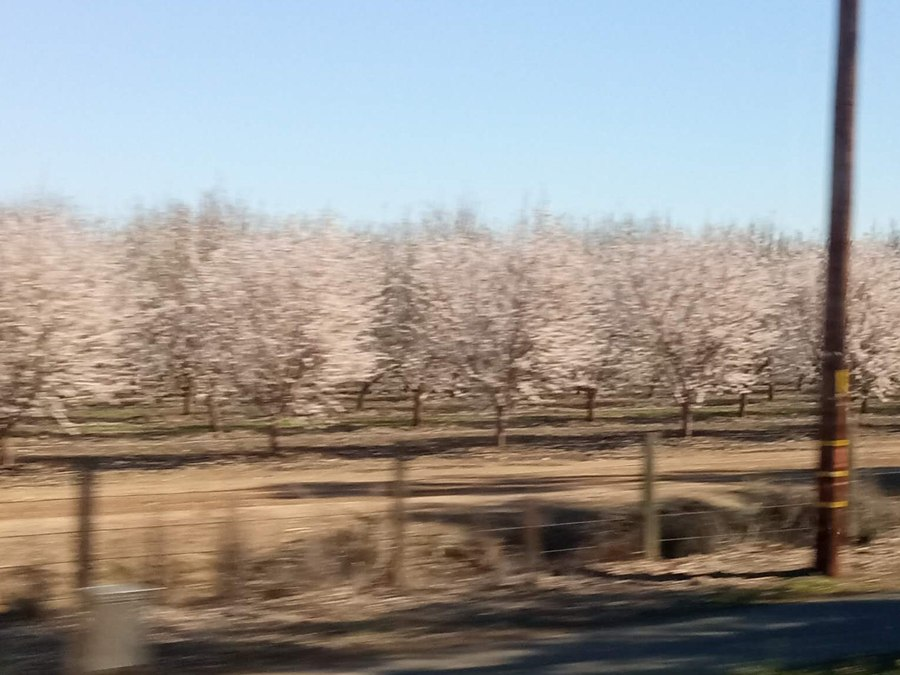

I work at the seam between the bench and the machine: host-microbe symbiosis, quorum sensing, and the AI tools that make biological data answerable. PhD in Quantitative & Systems Biology, 2026.

Recombinant expression and FPLC purification of difficult regulatory proteins, functional and phenotypic screening, and BSL-2 microbiology. I know what actually happens when an experiment meets reality.
Long-read genome assembly and annotation, comparative genomics on HPC, Python pipelines, and building AI tools, from fine-tuned language models to automated analysis.
The interesting problems live where the two talk to each other.
I grew up picking olives on cold Andalusian mornings, in a family that measured a year by its harvest. Science carried me from those groves to the vineyards of France's Vermeille Coast, and finally to the almond orchards of California's Central Valley. Three landscapes, three harvests, one throughline: a stubborn curiosity that has never let me stay in one place for long.



"A multiple of bacteria are stronger than a few, and thus by union are able to overcome obstacles too great for the few."Erwin F. Smith, Bacteria in Relation to Plant Diseases, 1905
My doctoral work maps the molecular and genomic basis of the symbiosis between Sepiola squids and their bioluminescent Vibrio symbionts, a tractable model for how hosts and microbes communicate, using the same quorum-sensing chemistry that governs disease in pathogens.